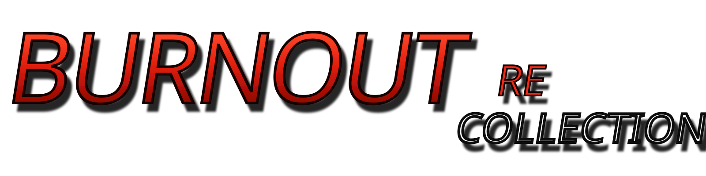

01
Burnout
A fundação: velocidade, tráfego, risco e direção arcade baseada em decisões de último segundo.
Planejado

A ERA CLÁSSICA, PRESERVADA.
Um projeto de preservação e recompilação dedicado aos três primeiros jogos da franquia, mantendo a sensação original de velocidade, risco e colisão em PCs modernos.
RECOLLECTION // ARCHIVE 01—03
Do risco contra o trânsito à colisão como arma: a evolução da fórmula clássica reunida em um único projeto.
A fundação: velocidade, tráfego, risco e direção arcade baseada em decisões de último segundo.
Point of Impact. A fórmula amadurece e o Crash Mode transforma destruição em objetivo.
Takedown. Corridas agressivas, boost, road rage e colisões transformadas em linguagem de jogo.
VISUAL DNA // SPEED • RISK • IMPACT
O visual do ReCollection usa colisão, faíscas, metal e movimento como linguagem — não como decoração. As imagens entram como grandes momentos de impacto entre as seções do site.


POR QUE ESTE PROJETO EXISTE
Burnout ReCollection nasceu para preservar uma era muito específica dos jogos de corrida.
Os três primeiros Burnout construíram uma identidade própria com velocidade extrema, tráfego, risco, colisões e uma sensação de direção que continua difícil de reproduzir.
O objetivo é permitir que Burnout, Burnout 2: Point of Impact e Burnout 3: Takedown continuem funcionando em computadores modernos através de recompilação e engenharia de compatibilidade, preservando física, ritmo, progressão e comportamento original.
O projeto não pretende substituir esses jogos por remakes. A prioridade é a fidelidade. Melhorias modernas entram por cima dessa base e, sempre que possível, como opções: resolução elevada, widescreen e ultrawide corretos, taxas de quadros maiores, menor latência, controles atuais e melhor compatibilidade com hardware moderno.
Também é um esforço de preservação a longo prazo. Hardware desaparece, sistemas operacionais mudam e métodos tradicionais de execução podem deixar de funcionar. Código aberto, documentação e uma base recompilada tornam essa experiência mais resistente ao tempo.
MODERNIZAÇÃO SEM DESCARACTERIZAÇÃO
Meta de runtime próprio para Windows, sem exigir o conversor a cada inicialização.
Escalonamento moderno, 4K/8K quando aplicável e apresentação limpa em monitores atuais.
16:9, 21:9 e 32:9 sem simplesmente esticar a imagem; câmera e HUD tratados corretamente.
Separação entre lógica e renderização para elevar FPS sem acelerar o gameplay.
Teclado, USB, Bluetooth, dongles, hot-plug, gatilhos analógicos, vibração e remapeamento.
Arquitetura preparada para extensões futuras sem exigir alterações destrutivas no jogo base.
DEVELOPMENT // LIVE STATUS
O progresso abaixo representa fases técnicas. Recursos só avançam de status quando realmente testados.
RECOMPILER // DISTRIBUTION
O projeto não distribui ISOs, BIOS, músicas, vídeos, modelos, texturas ou outros arquivos proprietários. Cada usuário utiliza sua própria cópia legal; o Recompiler extrai e prepara apenas o necessário localmente.
FAQ
Não. O objetivo é preservar o comportamento dos jogos originais por recompilação e compatibilidade moderna, adicionando melhorias opcionais sem substituir a experiência original.
Não. Nenhuma ISO, BIOS ou asset comercial será distribuído. O usuário deverá fornecer sua própria cópia legal.
A meta é não. Depois da conversão inicial, a instalação preparada deverá abrir diretamente pelo executável do ReCollection.
Esse é um dos objetivos: controles por cabo, Bluetooth ou dongle, além de remapeamento, gatilhos analógicos, vibração e hot-plug.
Não necessariamente. Cada jogo tem particularidades técnicas. O site vai mostrar o progresso individual de cada capítulo.